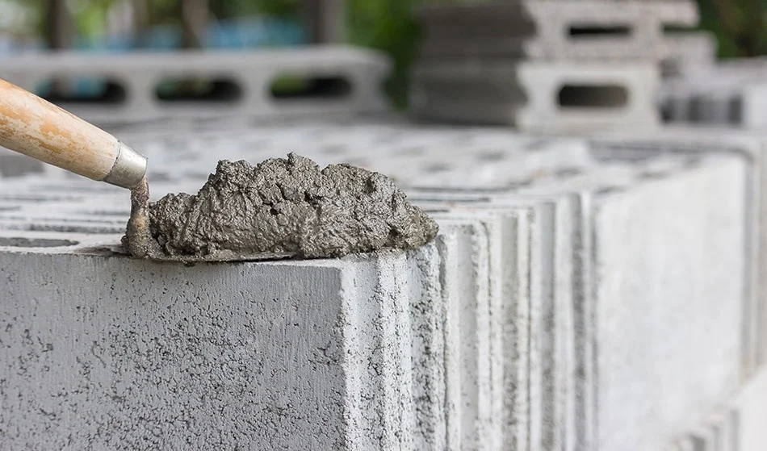

Cement

Description
A foundational mixture used in construction to bind materials together.
Once set, it becomes strong and immovable — the silent backbone of structures.
Ingredients:
- 1 part cement powder
- 2 parts sand
- 3 parts gravel (aggregate)
- Water (as needed for consistency)
- Optional: steel bars or mesh (for reinforcement)
Steps:
- Prepare a clean, level mixing area or container.
- Combine cement, sand, and gravel in the ratio 1:2:3.
- Mix the dry ingredients thoroughly.
- Slowly add water while mixing until a thick, workable paste forms.
- Pour into formwork or area to be cast.
- Smooth and shape as needed.
- Allow to cure for at least 24–48 hours. Full strength takes ~28 days.
- ~nyaaa (don’t eat it, catboy)
Home